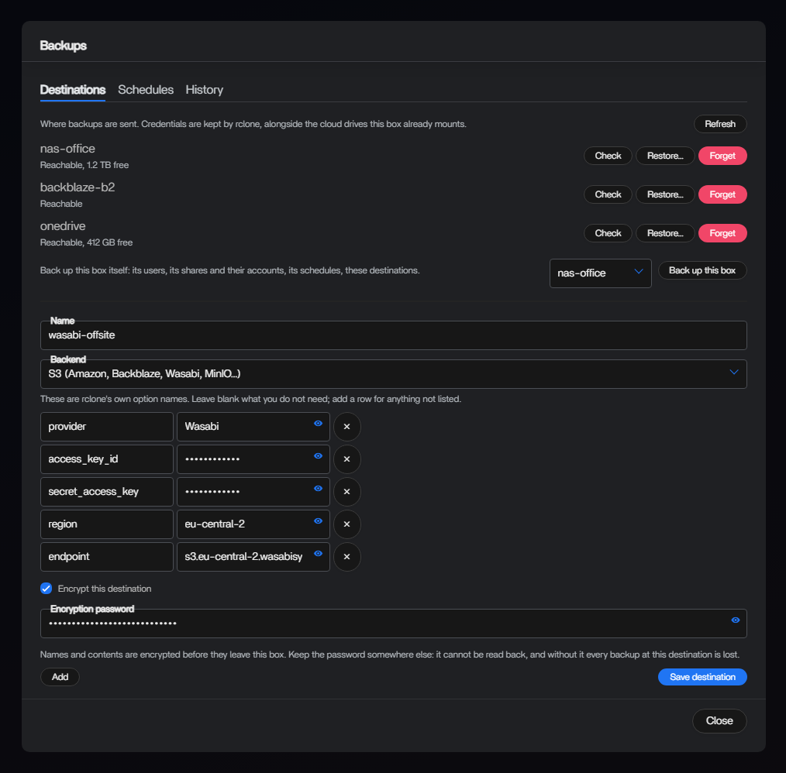
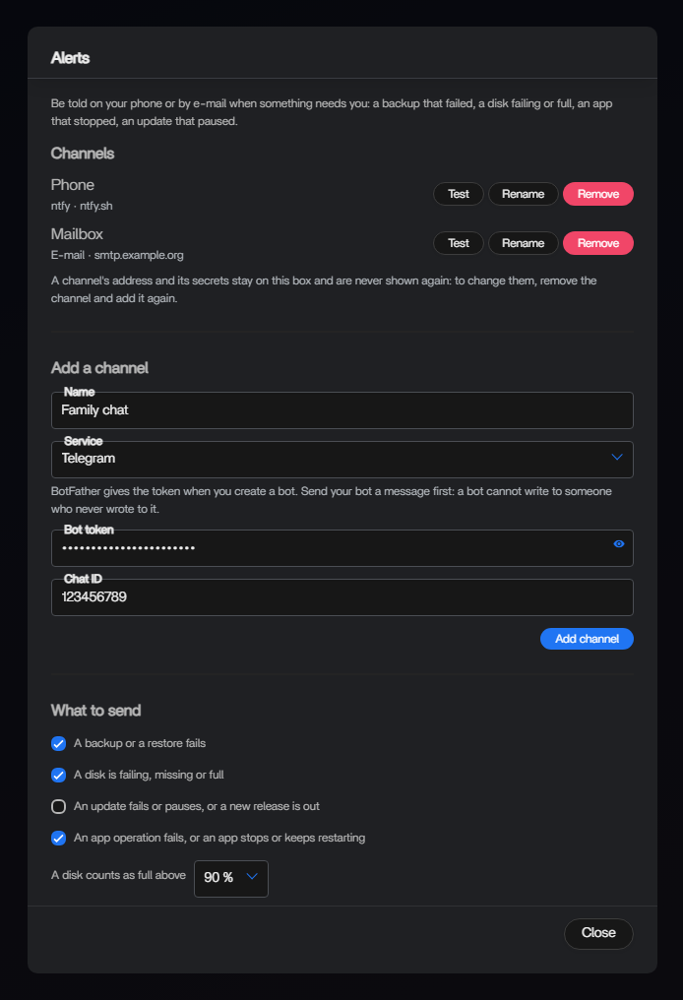

Compose, the way you write it
An editor and a .env for every app. Stacks you started with docker compose up are listed as apps. A start that fails after a .env change goes back to the previous one.
Open-source server dashboard
A container manager stops at containers. ReCasaOS also runs the backups, the alerts, the disks, the virtual machines and the other boxes you own. Installed with one command.
curl -fsSL https://github.com/ReCasaOS/CasaOS-Install/releases/latest/download/install.sh | sudo bash
Debian and Ubuntu, on amd64, arm64 and armv7. Run it again to upgrade. Anonymous statistics are on by default: what is sent, and how to turn it off.
Beyond containers
A server is also disks that fail, data that needs a copy somewhere else, an operating system that runs out of support, and a box at somebody else's house. ReCasaOS answers for those too.
Scheduled, encrypted backups of every app and of the box itself, to S3, SFTP, FTP, WebDAV, OneDrive, Google Drive, Dropbox or anything else rclone speaks. The app is held still for the copy, and a restore puts back an app that is no longer installed.
A notification on your phone or an e-mail, through ntfy, Telegram, Discord, Gotify, Matrix and more, when a disk fails or fills up, a RAID array loses a disk, a backup fails or an app keeps crashing.
Software RAID 0, 1, 5, 6 and 10, created and repaired from the Storage manager. Or SnapRAID parity over ordinary disks, set up in a single dialog, synced every night.
System packages from the dashboard, Docker itself only when you confirm, and a warning when your Debian or Ubuntu release has run out of security support.
One box is the master of the others. Each joins with a code and keeps an outbound connection to it, so no port opens on any box. Start, stop and update containers, virtual machines and ReCasaOS itself on several boxes at once.


Features
An editor and a .env for every app. Stacks you started with docker compose up are listed as apps. A start that fails after a .env change goes back to the previous one.
Follow a branch or the highest release tag. Webhooks from GitHub, Gitea, Forgejo and GitLab. New commits build without stopping the running version, and a version that does not start is rolled back.
Image by image, what an update would change, before you tick it. Opt-in automatic updates run at night, one day after a release, never during a backup.
Switch a destination to a restic repository: each backup costs only what changed, files keep their owners and permissions, and a restore can put back only the files you tick.
An optional module creates and runs virtual machines from the dashboard: upload an ISO or a disk image, open the console in the browser.
Processor, memory, network and disk of every container, every virtual machine and the machine itself, live and over the last 7 days, with thresholds that raise an alert.
Shared folders for a guest or an account, Time Machine shares, merged storage with mergerfs, and a trash that keeps what you delete for thirty days.
Passwords stored with argon2id, two-factor authentication, HTTPS on 443 without configuring anything, and nothing on the message bus without signing in.
Why trust it
Every release is installed from scratch by CI and exercised end to end (apps, backup and restore, storage, alerts) on Debian 11, 12 and 13, Ubuntu 22.04, 24.04 and 26.04, Armbian and DietPi.
Every ReCasaOS package the installer downloads is verified against a SHA-256 digest before extraction. Docker comes from Docker's own repository, verified by apt.
Apache-2.0, in the open on GitHub. There is one edition and everything on this page is in it. No account to create, no license key, no feature kept for a paid plan.
A Docker that is already there is left as it is and never updated behind your back. sudo casaos-uninstall removes ReCasaOS.
Already running CasaOS?
Upstream stopped shipping in 2025. ReCasaOS carries it on: an install made with IceWhale's or alvins82's installer is migrated without uninstalling first, the Docker 29 breakage is fixed, and the update button then follows this distribution. Services restart during the upgrade, so back up what matters first.
curl -fsSL https://github.com/ReCasaOS/CasaOS-Install/releases/latest/download/install.sh | sudo bash
On Proxmox VE, install it in a Debian or Ubuntu virtual machine. Supported systems.